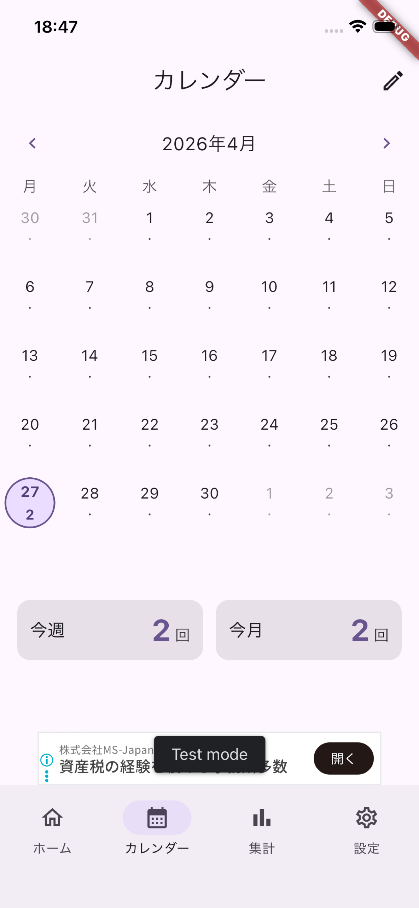
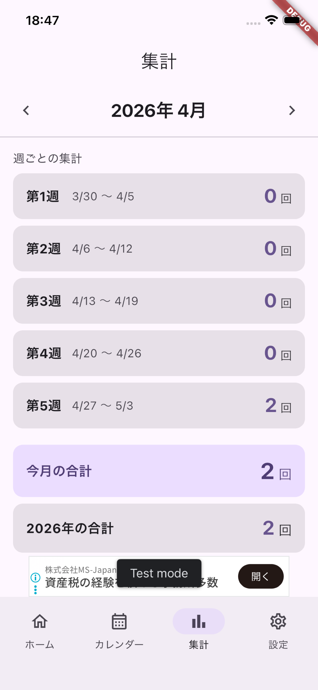
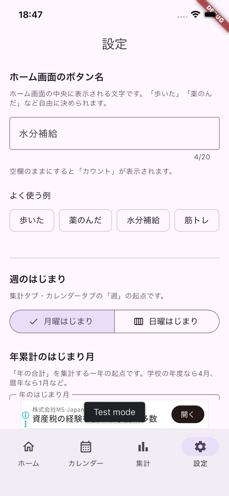

シンプル。だから、続く。
余計な機能を削ぎ落とした、続けるための4タブ構成。 入力は基本ワンタップ、間違えても長押しで戻せます。
ワンタップ記録
大きな丸ボタンを押すだけ。誤タップ防止に長押しで−1できます。
カレンダー表示
日ごとの回数がひと目で分かる。直接入力モードで過去の修正もOK。
自動集計
週・月・年の合計を自動計算。年度開始月や週はじまりも自由設定。
ボタン名は自由
「歩いた」「薬のんだ」「コーヒー」など、20文字まで自由に決められます。
テーマカラー
アプリ全体の配色をプリセットから選択。気分に合わせて色替え可能。
端末内で完結
記録はあなたの端末内に保存。アカウント登録もログインも不要です。
すべての画面を、ひと目で。
ホーム・カレンダー・集計・設定の4タブだけ。迷わず使えるように設計しました。
ホーム
大きなボタンでタップして+1。

カレンダー
日付ごとの回数を一覧で。

集計
週・月・年の合計を自動表示。

設定
ボタン名やテーマを自由に。
3ステップで、今日からはじめる。
使い方はシンプル。設定は数十秒で終わります。
ボタン名を決める
「歩いた」「薬のんだ」など、続けたいことの名前を入れます。
毎日タップする
達成したらホームの大きなボタンをタップ。間違えたら長押しで−1。
集計で振り返る
カレンダーや集計タブで、週・月・年の積み重ねが見られます。
よくある質問
使う前に気になるポイントをまとめました。
料金はかかりますか？
本体機能はすべて無料でご利用いただけます。アプリには広告が表示されます。
記録したデータはどこに保存されますか？
すべて端末内に保存されます。クラウドや当方サーバーには送信されません。詳しくはプライバシーポリシーをご覧ください。
1日の最大カウントはいくつまで？
0〜999回まで記録できます。多めの用途にも対応しています。
過去の日付を修正できますか？
カレンダー画面の「直接入力」ボタンをオンにすると、日付をタップして数値を直接入力できます。
週のはじまりや「年」の集計開始月は変えられますか？
設定タブから、週のはじまり(月曜/日曜)や年累計のはじまり月(1〜12月)を自由に変更できます。